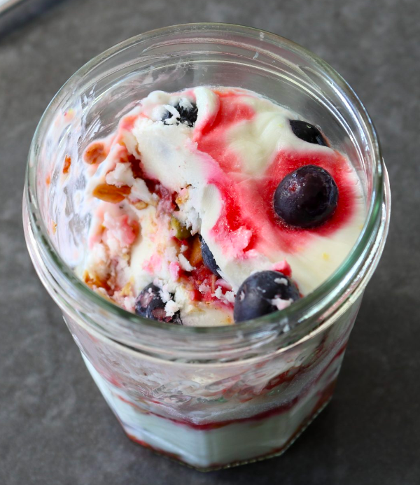

Frozen Yogurt Parfait

Description
"Parfait" does mean "perfect" in French, which is very fitting, because these frozen yogurt parfaits are perfectly easy, and are a perfect make-ahead frozen summer treat.
Ingredients
- 1 ½ cups raspberries, rinsed and drained
- ½ cup white sugar
- 1 cup blueberries, rinsed and drained
- 1 ½ cups granola
- 2 cups full-fat plain Greek yogurt
- 1 teaspoon vanilla extract
- 1 teaspoon lemon zest
- ½ cup white sugar
Instructions
- Combine raspberries and ½ cup white sugar in a bowl. Crush with a potato masher into a puree. Cover and let sit out for 1 hour.
- Pass berry puree through a fine mesh strainer to remove seeds. Add blueberries, stir, and keep in the refrigerator until needed.
- Whisk yogurt, vanilla, lemon zest, and sugar for frozen yogurt together in a bowl until sugar dissolves and the mixture is light and fluffy. Transfer into a piping bag and refrigerate until needed.
- Add 2 tablespoons of granola into an 8-ounce jar, or similar vessel. Top with 2 tablespoons of the fruit mixture. Try to make sure some of the fruit sauce is touching the glass so you can see the layers when frozen. Top with 2 heaping tablespoons of the yogurt mixture. Repeat twice more for a total of 3 layers. Top can be garnished with any remaining fruit and sauce.
- Freeze until frozen solid, about 8 hours, or overnight.